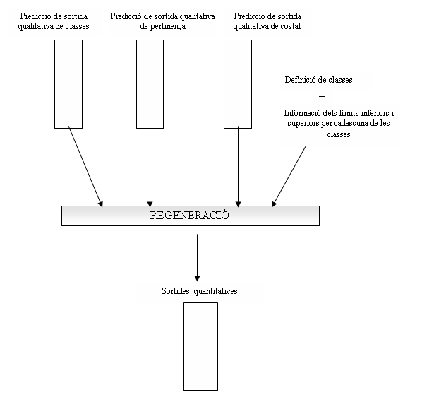

|
| VisualFIR |
Pantalla de regeneració
Per obtenir el valor quantitatiu de les sortides a partir dels resultats difusos que hem obtingut en la predicció, cal aplicar el procés invers a la codificació.
Aquest procés retorna un valor quantitatiu a partir de la informació continguda en la tripleta qualitativa, definit per les components de classe, de pertinença i de costat.

Nom del fitxer d’entrada de dades de la pantalla. El nom per defecte d’aquest fitxer, és el que s’ha posat com a sortida de la pantalla anterior (Pantalla de predicció). La modificació del nom del fitxer, es permet per si es vol regenerar algun fitxer estudiat prèviament. Quan es prem el boto de Regenerar, si el fitxer no existeix, es restaura automàticament el nom del fitxer anterior.
Nom del fitxer de sortida de les dades de la pantalla. El nom per defecte d’aquest fitxer és: FDadesSortida.mat i es pot modificar amb qualsevol nom que permeti el sistema operatiu.
Boto que inicia la regeneració de les dades del fitxer d’entrada de variables qualitatives i guarda el resultat quantitatiu al fitxer de sortida. Per fer la regeneració de les dades s’utilitza la funció Regenerate.dll de FIR, implementada en C.
Crida a la finestra de paràmetres per configurar els paràmetres útils per aquesta pantalla.
|
| Pantalla de predicció | Pantalla Dades sortida |
|